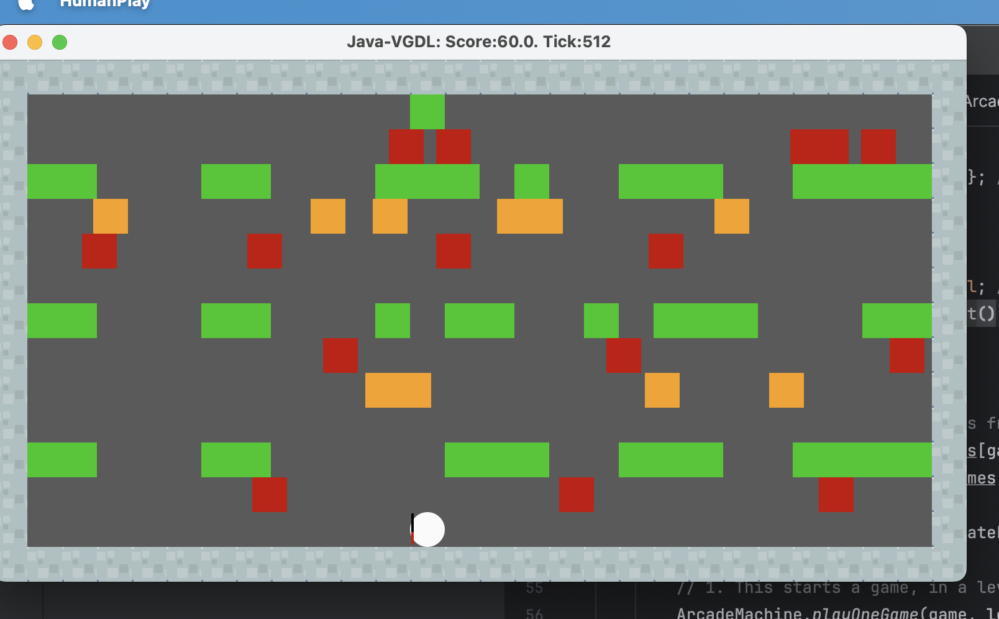
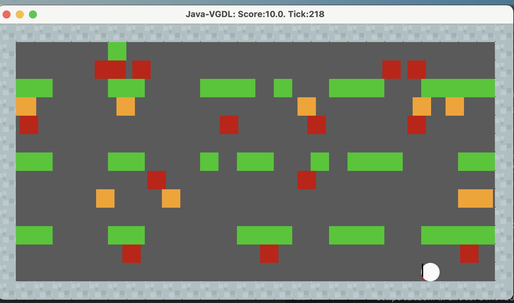
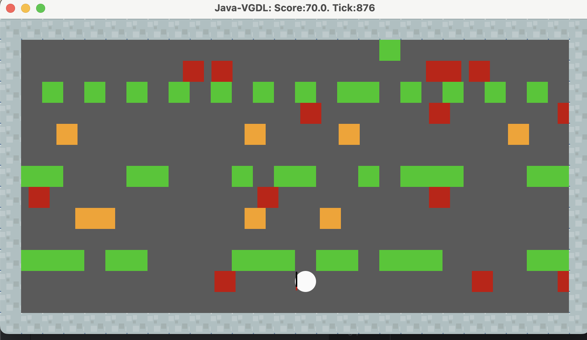

IntroAI_HW4 Freeway_Game Lab_Report
报告题目：Freeway Game
detect0530@gmail.com
2023年12月
1 引言
强化作为机器学习比较新的一个分支，广泛用于游戏ai中，本次实验，将以Freeway Game作为例子，运用强化学习的方法，训练一个能够自动玩游戏的ai。
2 实验内容
2.1 Task1
2.1.1.0 阐述强化学习的方法与过程
实验Sample code采用的是传统的Q-learning方法，Q-learning是一种基于Q值的强化学习方法，其核心思想是通过不断的迭代，更新Q-table，最终得到一个最优的Q-table，从而得到最优的策略。
具体来说，需要维护Q-tabke来辅助决策，Q-table记录了每个statement对应每个action的打分。这一步我们引入了三个东西：
- 状态 ： 指游戏或模型中不同的状态定位，当然在特征工程的帮助下，也可以看作特征，
- action ： 指游戏/模型规定的运作方式。
- 打分 ：又涉及heuristic函数，来对当前状态以及action评分。
Q-learning 强化学习算法流程：
第一步设计对状态的评估函数Q，Q(s,a)表示在s状态下a动作的评分。
第二步，让游戏/模型自己运行，运行的效果好也罢，不好也罢，不重要，我们唯一要做的事情是在运行时不断对Q(s,a)进行调整，最终希望所有的Q(s,a)收敛，这样我们在之后的游戏里，就可以直接利用收敛的Q-table来确定当前状态下，最优秀的action是哪一步了。
第三步，调整说来容易，如何才能做到了。贝尔曼将这个故事继续演绎了下去：
解释一下：
R时执行动作a后得到的奖励，当前时s状态，找到动作a后会前往下一个状态s‘，而后在s’状态下找到一个最大化的Q(s’,a’)即可。
分析一下参数的含义：
- （学习率）代表了新的Q值能从旧的Q值学到多少比重。
- （折扣因子）代表了未来奖励的折扣因子，如果越大，那么越重视未来奖励，反之，越重视当前奖励。
故事到这里就结束了，只需要不断的让游戏/模型运行，然后不断的调整Q值，最终Q值收敛，我们就可以直接利用Q值来决策了。
2.1.1.1 策略模型
sample code中巧妙地使用了epsilon参数来控制随机性，从而避免陷入局部最优解。具体来说，每一次决策，都有的概率随机选择一个action，而有的概率选择当前状态下，Q值最大的action。
这样一来，赋予了策略随机性有机会让模型跳出局部最优解.
同时，我注意到sample code里使用了:
m_c = new weka.classifiers.trees.REPTree();
REPT分类器，这是一种基于决策树的分类器，其核心思想是通过不断的迭代，将数据集分割成多个子集，最终得到一个决策树，从而得到最优的分类器。
依托于决策树而非传统的Q值表。树与表的结构相比可以自由确定特征选择，从而更好的学习到特征之间的关系。
最后再从REPTree转换会Q-table进行决策。
2.1.1.2 模型缺点
- 由于Q-learning是一种基于Q值的强化学习方法，其核心思想是通过不断的迭代，更新Q-table，最终得到一个最优的Q-table，从而得到最优的策略。但是这种方法的缺点是，需要维护一个Q-table，这个Q-table的大小是与状态数和动作数成正比的，如果状态数和动作数很大，那么这个Q-table就会很大，这样就会导致内存不够用，或者是计算速度很慢。所以这种方法只适用于状态数和动作数比较小的情况。
但对于本问题，光是sample code的特征就有八百余个，特征过多带来的问题：
- q-table里状态太多，数据量不够的情况下，很难收敛。
- 特征过多，
1 | while (m_dataset.numInstances() > m_maxPoolSize) { |
可以看到，sample code中限制了dataset的数量，这也是特征过多的后果。
2.1.1.3 改进方法
改进特征的表示方法，将特征进行refine和降维，从而减少特征数量，同时也可以减少状态数量。这一部分会在之后详细介绍到。
2.1.2 SIMULATION_DEPTH, m_gamma, m_maxPoolSize
- SIMULATION_DEPTH
代表训练模拟的深度，越深意味着训练集越充沛，但是同时也意味着训练时间越长，所以需要权衡。
- m_gamma
这是一个衰减指数，代表了未来奖励的折扣因子，如果越大，那么越重视未来奖励，反之，越重视当前奖励。
- m_maxPoolSize
代表了dataset的最大数量，超出这个数量，会像queue一样把最早记录的data删去。可以控制储存的dataset的大小。
2.1.3 getAction 和 getActionNoExplore
这两个函数都是用来决策的，区别在于getActionNoExplore不会随机选择action，而是直接选择当前状态下，Q值最大的action。
- getaction： 用于训练，会随机选择action，从而避免陷入局部最优解。
- getactionNoExplore： 用于测试，不会随机选择action，而是直接选择当前状态下，Q值最大的action。
2.2 修改特征提取方法
在讨论特征提取的优化之前，先让我们留意原始sample code相当不合理的几个问题：
- 修改1
1 | public int getAction(double[] feature) throws Exception{ |
在这里，我将epsilon greedy choice前置了，因为需要随机选择的我们就不需要计算Q值了，这样可以节省一些计算量。（sample code里将epsilon greedy choice放在了计算Q值之后）
- heuristics函数
我发现sample code里调用的是winheurstic function,里面只基于游戏输赢判断。 这非常不合理，因为游戏输赢只是一个二元的判断，而我们需要的是一个连续的评分，这样才能更好的反映当前状态的好坏。
所以我将heuristic函数进行了改进：
1 | public double evaluateState(StateObservation stateObs) { |
-
加入深度引导，显然我们希望avatar所在层数越高越好，所以我加入了一个dis变量，表示avatar所在层数，然后将其作为一个惩罚项，这样就可以引导avatar向上移动。
-
同时我们希望avatar所在的x坐标越靠近中间越好（可以左右连续移动更佳灵活），所以我加入了一个惩罚项，这样就可以引导avatar向中间移动。
ok，至此前置工作完成，我们开始考虑重新设计特征提取。
原来的特征包括所有的地图特征，显然avatar当前的决策不需要考虑地图的所有特征，只需要考虑avatar周围的特征即可，所以我们可以将地图特征进行refine，只保留avatar周围的特征。

经过调整试错，最后决定保留的地图特征。
这样一来，我们只会关注周围的地图，且后两排的关转范围比后一排大，这样就可以更好的引导avatar向上移动。同时因为有事会被逼退，所以也要考虑之前一行的地图特征。
同时地图特征必须与avatar自己的坐标交互，于是同样要保存avatar的横纵坐标。
1 | public static double[] featureExtract(StateObservation obs){ |
这样一来，我们update了特征选取的方法，同时也减少了特征数量，从而减少了状态数量，这样就可以更好的收敛，储存，计算。
（在使用默认的参数的情况下）从得到的结果来看，10次有2-3次可以通关游戏，但是不是很稳定，有时还是会在某些位置反复横跳或者跑到角落里去了。
不过总的来说，进步已经相当明显了。（运行sample code根本没法通关）
2.3 修改强化学习参数
- epsilon： 0.3 --> 0.2
游戏里只要碰到障碍物就会回到初始层，多掉几次就会寄。在关键时刻的决策又很重要（甚至一步走错了，会导致几步内无解），于是我们尽量减少训练过程中的随机性，从而减少这种情况的发生。
- agent parameter：
1 | protected Classifier m_model; |
因为我们的特征数量减少了，所以我们可以增加SIMULATION_DEPTH和m_maxPoolSize，从而增加训练集的数量，从而更好的收敛。
同时略微减少m_gamma，从而更加重视当前奖励。
3 实验 performance
在经过以上的改进之后，游戏推理期间，前3次可以稳定快速通关，这是我们非常期待的事情的。
这是较好的一次结果：

但是同样也碰到了一些问题。
因为我的特征提取只提取了avatar周围的地图，又因为每一层障碍物移动是固定方向的，所以avatar会记住障碍物在周围时该如何行动，但是却没有足够多的data告诉它当周围没有障碍物时该怎么走，于是就会出现这种情况：
- 第一层障碍物固定从左往右，按照较大的间隔出现并移动。
- avatar在前几次尝试中学会了如何躲过障碍物前进，但是却没有学会如何在障碍物不在周围时前进。
- 于是每一个障碍物出现时，avatar的缺会躲开，但是会跟着这个障碍物往右边移动一小段，直到被这个障碍物甩开，但是此时又进入了下一个障碍物的检测范围，又回跟着这个障碍物往右边移动一小段，直到被这个障碍物甩开，如此循环。
- 结果就是如果第一层右侧挡板较多难以突破时，就会跟着移动的障碍物大方向往右边走，直到卡在最右段，如果最右段被挡板封死了，就会一直循环躲避障碍-被阻挡-躲避障碍物的循环而耗尽时间输掉游戏。
这是一个比较糟糕的结果：

就像上述说的一样，被第一层障碍物的出怪频率和方向卡死在最右角。
但是对于第一层出怪没那么频繁，且第一层阻挡物不是很多（其他层多，但是其他层不会像第一层障碍物那样太少了），就可以稳定通关。
像这样：

4 总结
本次实验，我学习了强化学习的相关知识并在freeway游戏里得到了运用，同时也对强化学习的方法进行了改进，使得游戏的通关率/速度大大提高。
改进涉及：heuristic函数、代码结构、特征提取方法、强化学习参数等。
很高兴能有这样的机会学习强化学习的相关知识，同时能够在这样的实验中得到运用。